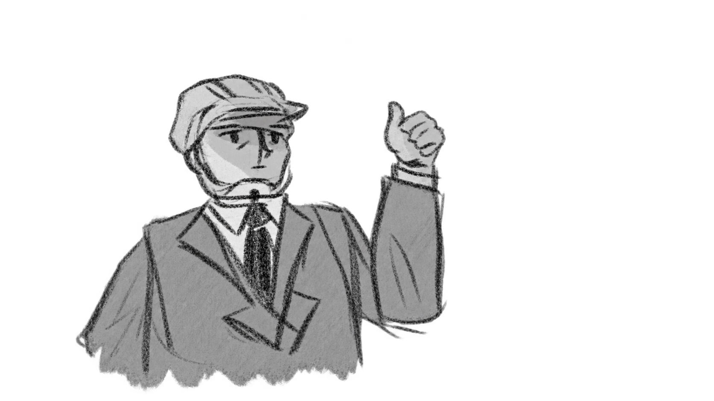
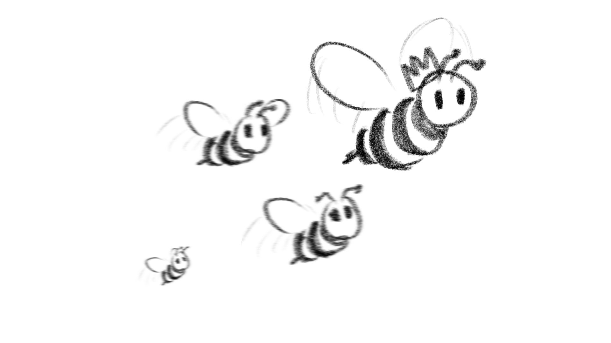

AN ARCADE TOWER DEFENSE GAME
KEEP THE
HIVE ALIVE.
Bears and pesticide clouds are closing in. Scout the misty meadow, discover flower groves, and protect the queen.


PROLOGUE · 01
A WORLD IN BLOOM
Before the silence, the meadow belonged to the bees.
01 / 05
HIVE HEALTH
100 / 100
CALM BEFORE THE RAIDDAY 1
THE GARDEN IS QUIETScout the mist to find flowers and hidden threats.
1SOLDIER stings bears2GAS BEE clears pesticide3FARMER gathers fooddrag a box to pick a squad · Esc cancels
TRAINING
your move…
YOUR COLONY
SCOUT THE FOG.
GROW THE HIVE.
SOLDIEROrange ring, shield badge. Big and tough, stings bears. Select it, then click a spot to scout or a farmer to escort it. Hotkey 1.
GASTeal ring, cloud badge. Sprays a mist that breaks up every pesticide cloud nearby. Can’t hurt bears, but can scout and escort too. Hotkey 2.
FARMERYellow ring, flower badge. Fast and never fights. Flies food from the nearest grove to the hive, and can scout the fog too. Native flowers give double. Hotkey 3.